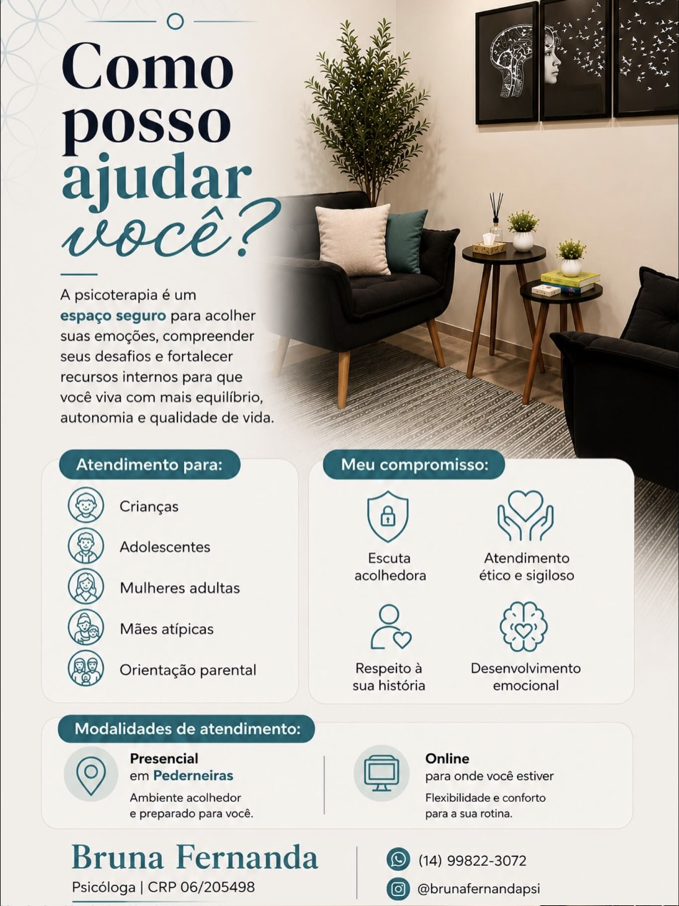
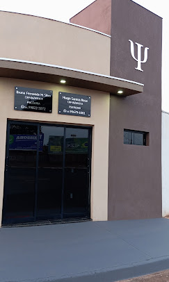

“Conhecer a si mesmo é o começo de toda sabedoria.” Aristóteles
CRP 06/205498
Sou psicóloga e atuo na área clínica com uma abordagem acolhedora, ética e individualizada, oferecendo um espaço seguro para que cada pessoa possa compreender suas emoções, enfrentar desafios e desenvolver recursos para uma vida com mais equilíbrio, autonomia e qualidade.
Meu trabalho é direcionado especialmente ao atendimento de crianças, adolescentes, mulheres adultas e mães atípicas, além de oferecer orientação parental. Busco compreender cada história em sua singularidade, respeitando o momento, as necessidades e os objetivos de cada paciente.
Na psicoterapia, acredito que o vínculo, a escuta e o acolhimento são fundamentais para promover mudanças significativas. Meu compromisso é construir, junto com cada paciente, um processo terapêutico baseado no respeito à sua história, escuta acolhedora, ética, sigilo e desenvolvimento emocional.
Realizo atendimentos presenciais em Pederneiras - SP, em ambiente preparado e acolhedor, e também na modalidade on-line, proporcionando flexibilidade e conforto para que a psicoterapia possa fazer parte da rotina de cada pessoa.
Atendimento psicológico com base na Terapia Cognitivo-Comportamental (TCC), abordagem reconhecida cientificamente que ajuda a identificar e transformar padrões de pensamento, emoção e comportamento. Trabalho voltado às diferentes fases e vivências, com escuta cuidadosa e respeito à história de cada pessoa.
Abordagem prática e colaborativa: terapeuta e paciente trabalham juntos, com metas claras e ferramentas para lidar com os desafios do dia a dia.
Acompanhamento sensível e adaptado a cada fase do desenvolvimento, em parceria com a família.
Um espaço de escuta e confiança para atravessar as mudanças, dúvidas e desafios dessa fase.
Cuidado com a saúde emocional, as relações e as múltiplas demandas da vida adulta.
Atendimento e acolhimento para mães de crianças com deficiência, transtornos ou necessidades específicas.
Apoio a pais e cuidadores na compreensão e no manejo dos desafios da criação dos filhos.
Sessões em consultório em Pederneiras - SP ou a distância, com a mesma qualidade e sigilo.
Desenvolvimento e fortalecimento de recursos para lidar com as emoções e os desafios do dia a dia.

Cada pessoa chega à terapia com uma história única. Por isso, meu trabalho parte de uma escuta cuidadosa e sem julgamentos, buscando compreender não apenas a dificuldade apresentada, mas também os recursos, potencialidades e possibilidades de cada indivíduo.
Meu propósito é oferecer um espaço de acolhimento, compreensão e desenvolvimento, para que você possa cuidar da sua saúde emocional e construir caminhos mais conscientes e possíveis para a sua vida.

Whatsapp: (14) 99822-3072
R. Bernardo Constantino - Residencial Terra Nova, Pederneiras - SP, 17282-234